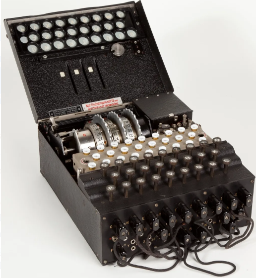

Cracking the Enigma Code Today
The Enigma Machine is a true icon in the world of cryptography, captivating generations of mathematicians and computer scientists. Developed by the Germans during World War II, even the experts considered this machine impregnable until the ingenious efforts of Alan Turing and his team at Bletchley Park. Turing’s breakthroughs not only helped to save countless lives but also revolutionized the field of computing, paving the way for modern computers as we know them today. With the power of modern technology at our fingertips, it’s tempting to think that breaking Enigma would be a trivial task. However, as we’ll explore in this blog, this is far from the truth. Despite the advances in computing power, the Enigma Machine remains a formidable challenge. So, join me on a journey through the past and present as we attempt to break Enigma. This is part I of a two-part post. In this post, we will understand the problem and build an intuition for a solution and in the next one, we will actually code-up some solutions.
Understanding the Machine Before we go further, let’s peel the layers of this machine. The interface is simple. You look up today’s configuration from a sheet and set up your machine. Once done, if you want to encrypt a message, you type the letters one by one and note the corresponding letters that light up, constituting an encrypted message. You then transmit this message by whatever channel. When you receive one of these messages, you prepare the machine again by looking up the configuration from your sheet and then start typing the encrypted message noting the characters that light up to get the original plaintext back. Underneath this simple interface is a clever electro-mechanical circuit with three main components — a switchboard with ten symmetric key substitution switches (e.g. an L with a K and K with an L), three rotors to be chosen from 5–8 possible rotors and finally, a reflector. Each rotor has a “seed” configuration that determines the starting position. Once you hit a letter, the rotors will rotate, and the signal will go through 1) the switchboard, which may change the letter with another; 2) the three rotors, each of which will change the letter; 3) the reflector, which will predictably change the letter and finally 4) the switchboard again which may once more change the output letter with another.